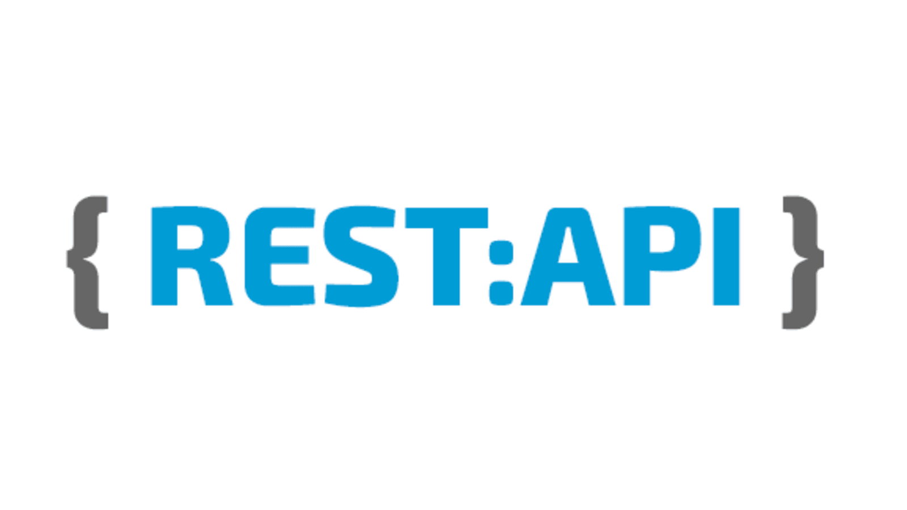
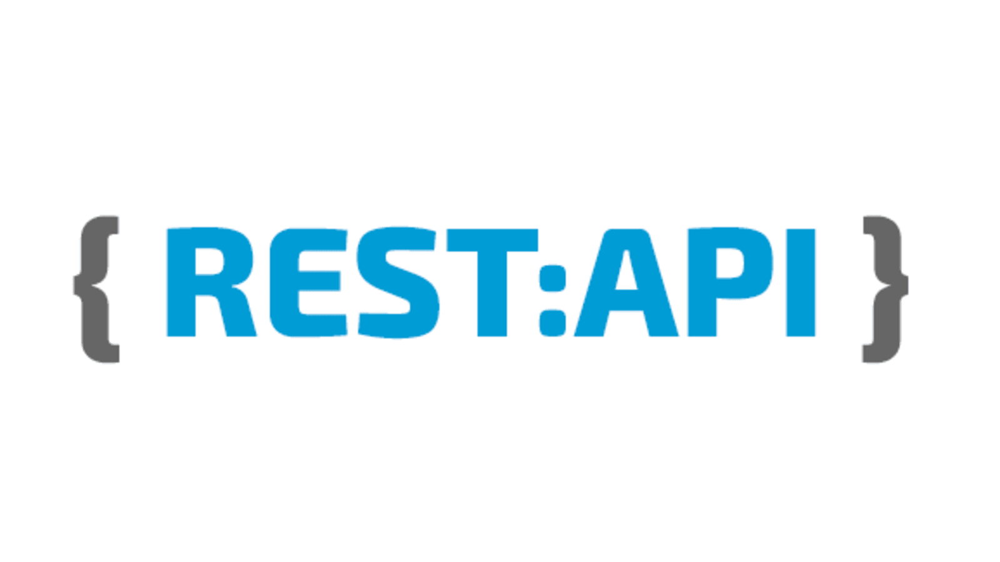
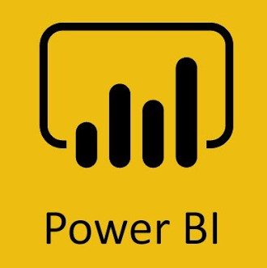
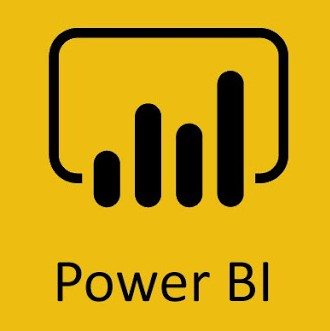

Benita Rego
brego@scu.edu | My Resume
I'm a Computer Science and Engineering Graduate Student at Santa Clara University, started in Fall 2021.
Background experience in the field of Mobile Application Development and Full Stack Development. Additionally, I've also worked on projects related to domains such as Image Processing, Deep Learning and Data Analysis. Always trying to have an hands on experience on the new technologies I learn which I apply on my projects. I look forward to researching, learning and applying on my upcoming ventures.
My interests lie in designing and developing applications using the frameworks trending and evolving.
Education
Santa Clara University
University of Mumbai
GPA: 3.82/4
Experience
Mobile Application Developer Intern
Origin Cloud Technologies | June 2020 - July 2020- Developed a mobile application, similar to Handshake for college students and companies that significantly improved the hiring process and user interface.
- Structured the layouts and environment of the application along with implementation and manipulations based on the customer requirements.
- Built a responsive user interface from scratch using Flutter SDK and inbuilt tools using pub manager and backend using Cloud Firestore and authentication in Firebase.
- Created a report using Docs for the job/internship portal software for documentation and improvement in the performance of the application.
Projects
Social Media Data Analysis for Mental Health Evaluation
Auguest 2020 - May 2021A system which provides assistance to the user by analyzing his state of mind by his social media contents and further recommending health care experts to get through their declining mental state.
Human Action Recognition Application for House Monitoring
March 2020 - April 2020A security purpose model for detection and vigilance.
Expendo - Task and Event Management Application
October 2020 - November 2020A productivity application which combines the features of to-do task management and budget tracker. This user-friendly app regains clarity and calmness by getting all those tasks out of your head and onto your to-do list along with controlling the expenses and reminds the user of the task to be done using push notifications.
Machine Learning Target Prediction Portal
April 2020A web application that predicts a target variable from a dataset uploaded by the user and also selecting the algorithms he wishes to use (eg. regression).
Event Management and Organization Portal for NGO
Sept 2019 - Oct 2019A web application where contents related to the organization is displayed as well as registering as a volunteer, staff and volunteers management with event creation and many more features are provided.
Document Summarisation for News Articles
Sept 2019 - Oct 2019Headlines of news articles summarized to a summary or short paragraph using NLP.
Skills


 


 


Extra-Curriculum
Positions of Responsibility
- Public Relations Head at CodeLabsCRCE (2019-2020)
- Webmaster at CodeLabsCRCE (2018-2019)
Publication & Other Activities
- Published a paper entitled "Social Media Analysis for Mental Health Evaluation" in International Journal for Research in Applied Science & Engineering Technology (IJRASET) - Click here
- Built various systems during DMCE Hackathon, (Internal) Smart India Hackathon 2020, Synergy Hackathon
Interests
Made by Me with ♥